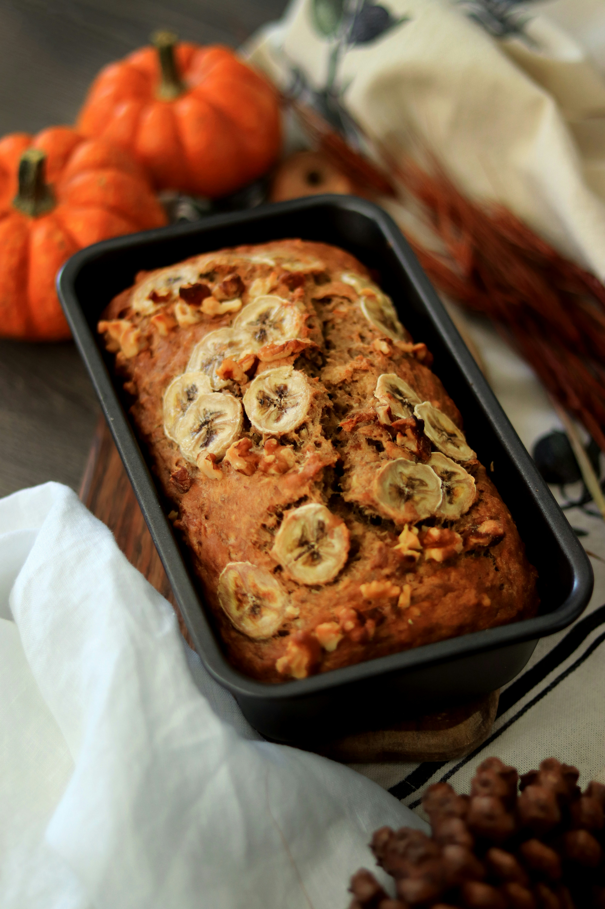

Banana Bread
Home

Description
This is an easy and delicious banana bread recipe. This is my favorite banana bread recipe, I have been making it for years now! Get excited for a moist and gooey texture.
It can be eaten as a snack or breakfast. Try to pair it with tea or coffee.
You don't need anything fancy to make it, just a bowl and spoon will do! My favorite way to eat is with a bunch of chocolate chips
mixed in, but you can also add nuts or raisins! Whatever you like!
Ingredients
- 3 ripe bananas
- 1/2 cup maple syrup
- 1/3 cup olive oil
- 2 eggs
- 2 cups quick oats
- 1 tsp cinnamon
- 1 tsp baking powder
- 1 tsp salt
- Optional: chocolate chips
Steps
- Preheat oven to 350F/175C
- Add 2 cups of oats to the blender or food processor to make into flower
- Mix wet ingredients (bananas, maple syrup, olive oil, eggs) in a bowl
- Add the dry ingredients into the wet ingredients (oats, cinnamon, baking powder, salt)
- Add in chocolate chips (measure with the heart)
- Pour over a baking tray greased with olive oil or with parchment paper
- Top with more dark chocolate chips
- Bake at 350F/175C for 35-45 minutes